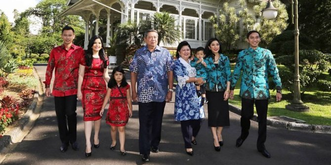

TENTANG
Keluarga Susilo Bambang Yudhoyono
Jenderal (HOR.) TNI (Purn.) Prof. Dr. H. Susilo Bambang Yudhoyono GCB AC (lahir di Tremas, Arjosari, Pacitan, Jawa Timur, Indonesia, 9 September 1949; umur 69 tahun) adalah Presiden Indonesia ke-6 yang menjabat sejak 20 Oktober 2004 hingga 20 Oktober 2014.Ia adalah Presiden pertama di Indonesia yang dipilih melalui jalur pemilu. Ia, bersama Wakil Presiden Muhammad Jusuf Kalla, terpilih dalam Pemilu Presiden 2004. Ia berhasil melanjutkan pemerintahannya untuk periode kedua dengan kembali memenangkan Pemilu Presiden 2009, kali ini bersama Wakil Presiden Boediono. Sejak era reformasi dimulai, Susilo Bambang Yudhoyono merupakan Presiden Indonesia pertama yang menyelesaikan masa kepresidenan selama 5 tahun dan berhasil terpilih kembali untuk periode kedua.
Yudhoyono yang dipanggil "Sus" oleh orangtuanya dan populer dengan panggilan "SBY", melewatkan sebagian masa kecil dan remajanya di Pacitan. Ia merupakan seorang pensiunan militer. Selama di militer ia lebih dikenal sebagai Bambang Yudhoyono. Karier militernya terhenti ketika ia diangkat Presiden Abdurrahman Wahid sebagai Menteri Pertambangan dan Energi pada tahun 1999, dan tampil sebagai salah seorang pendiri Partai Demokrat. Pangkat terakhir Susilo Bambang Yudhoyono adalah Jenderal TNI sebelum pensiun pada 25 September 2000. Pada Pemilu Presiden 2004, keunggulan suaranya dari Presiden Megawati Soekarnoputri membuatnya menjadi presiden pertama yang terpilih melalui pemilihan langsung oleh rakyat Indonesia. Hal ini dimungkinkan setelah melalui amendemen UUD 1945.

Ia lahir di Kabupaten Pacitan, Jawa Timur pada 9 September 1949 dari pasangan Raden Soekotjo dan Siti Habibah. Dari silsilah ayahnya dapat dilacak hingga Pakubuwana serta memiliki hubungan dengan trah Hamengkubuwana. Seperti ayahnya, ia pun berkecimpung di dunia kemiliteran. Selain tinggal di kediaman keluarga di Bogor (Jawa Barat), SBY juga tinggal di Istana Merdeka, Jakarta. Susilo Bambang Yudhoyono menikah dengan Kristiani Herawati yang merupakan putri ketiga Jenderal (Purnawirawan) Sarwo Edhi Wibowo (alm). Komandan militer Jenderal Sarwo Edhi Wibowo turut membantu menumpas PKI (Partai Komunis Indonesia) pada tahun 1965. Dari pernikahan tersebut mereka dikaruniai dua anak lelaki, yaitu Agus Harimurti Yudhoyono (lahir 1978) dan Edhie Baskoro Yudhoyono (lahir 1980). Agus adalah lulusan dari SMA Taruna Nusantara tahun 1997, dan Akademi Militer Indonesia tahun 2000. Seperti ayahnya, ia juga mendapatkan penghargaan Adhi Mekayasa dan seorang prajurit dengan pangkat Letnan Satu TNI Angkatan Darat yang bertugas di sebuah batalion infantri di Bandung, Jawa Barat. Agus menikah dengan Anissa Larasati Pohan, seorang aktris yang juga anak dari mantan Deputi Gubernur Bank Indonesia, Aulia Pohan. Sejak pertengahan 2005, Agus menjalani pendidikan untuk gelar magister di Institute of Defense and Strategic Studies, Singapura. Anak yang bungsu, Edhie Baskoro lulus dengan gelar ganda dalam Financial Commerce dan Electrical Commerce tahun 2005 dari Curtin University of Technology di Perth, Australia Barat.

Seperti ayahnya, ia pun berkecimpung di dunia kemiliteran. Selain tinggal di kediaman keluarga di Bogor (Jawa Barat), SBY juga tinggal di Istana Merdeka, Jakarta. Susilo Bambang Yudhoyono menikah dengan Kristiani Herawati yang merupakan putri ketiga Jenderal (Purnawirawan) Sarwo Edhi Wibowo (alm). Komandan militer Jenderal Sarwo Edhi Wibowo turut membantu menumpas PKI (Partai Komunis Indonesia) pada tahun 1965. Dari pernikahan tersebut mereka dikaruniai dua anak lelaki, yaitu Agus Harimurti Yudhoyono (lahir 1978) dan Edhie Baskoro Yudhoyono (lahir 1980).
Agus adalah lulusan dari SMA Taruna Nusantara tahun 1997, dan Akademi Militer Indonesia tahun 2000. Seperti ayahnya, ia juga mendapatkan penghargaan Adhi Mekayasa dan seorang prajurit dengan pangkat Letnan Satu TNI Angkatan Darat yang bertugas di sebuah batalion infantri di Bandung, Jawa Barat. Agus menikah dengan Anissa Larasati Pohan, seorang aktris yang juga anak dari mantan Deputi Gubernur Bank Indonesia, Aulia Pohan. Sejak pertengahan 2005, Agus menjalani pendidikan untuk gelar magister di Institute of Defense and Strategic Studies, Singapura. Anak yang bungsu, Edhie Baskoro lulus dengan gelar ganda dalam Financial Commerce dan Electrical Commerce tahun 2005 dari Curtin University of Technology di Perth, Australia Barat.